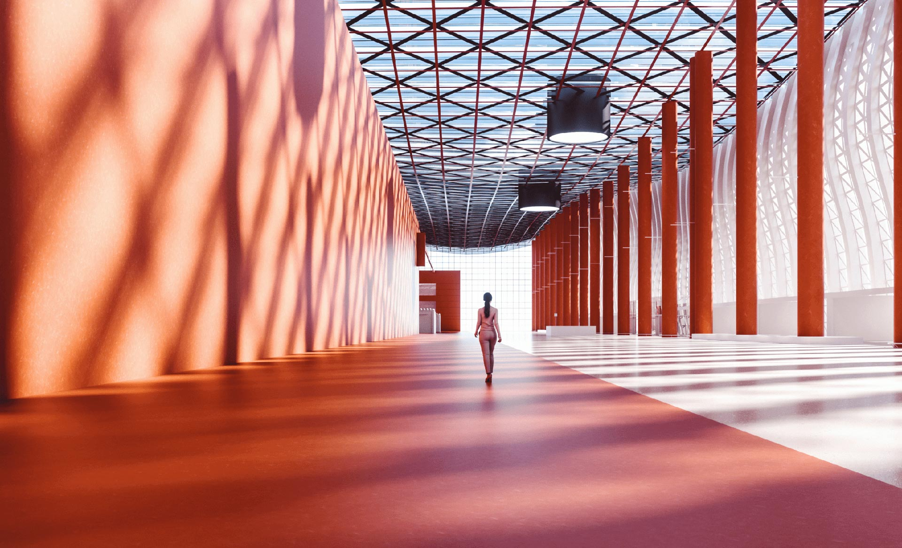
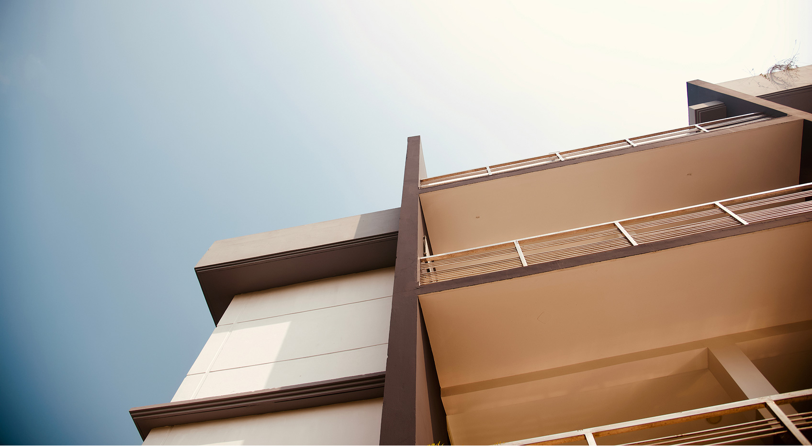

Selected Projects
Work Maren led

Meridian Residence
Oslo, Norway · 2025
Atlas Cultural Centre
Vienna, Austria · 2018
Serra Villa
Porto, Portugal · 2023
Awards & Recognition
Dezeen Awards
Architect of the Year — Shortlist
2025
European Architecture Award
Gold, Residential — Meridian Residence
2024
Frame Awards
Best Use of Material — Jury Citation
2023
Wallpaper* Design Awards
Best New Practice — Commendation
2022
ArchDaily
Building of the Year — Nominee
2021
RIBA International
Award for International Excellence — Longlist
2020
As featured in
Dezeen
Wallpaper*
Architectural Record
Frame Magazine
ArchDaily